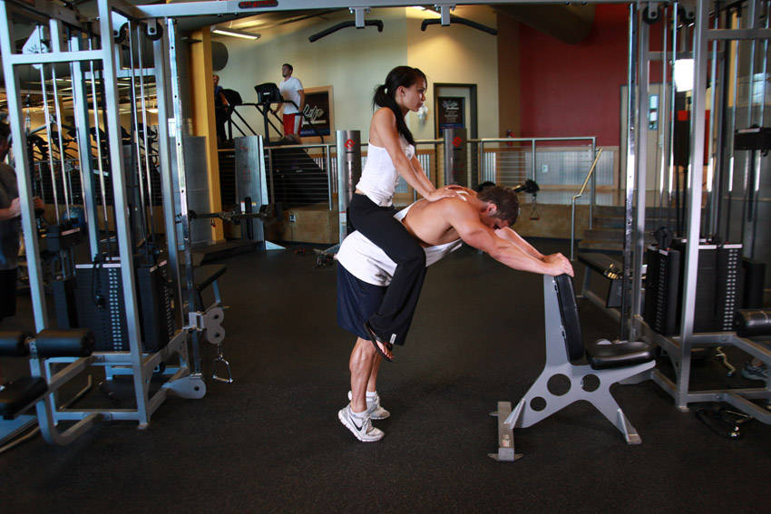

- For this exercise you will need access to a donkey calf raise machine. Start by positioning your lower back and hips under the padded lever provided. The tailbone area should be the one making contact with the pad.
- Place both of your arms on the side handles and place the balls of your feet on the calf block with the heels extending off. Align the toes forward, inward or outward, depending on the area you wish to target, and straighten the knees without locking them. This will be your starting position.
- Raise your heels as you breathe out by extending your ankles as high as possible and flexing your calf. Ensure that the knee is kept stationary at all times. There should be no bending at any time. Hold the contracted position by a second before you start to go back down.
- Go back slowly to the starting position as you breathe in by lowering your heels as you bend the ankles until calves are stretched.
- Repeat for the recommended amount of repetitions.
This exercise appears in Programmd training programs. Take the quiz to find one for your gym.
Find your program